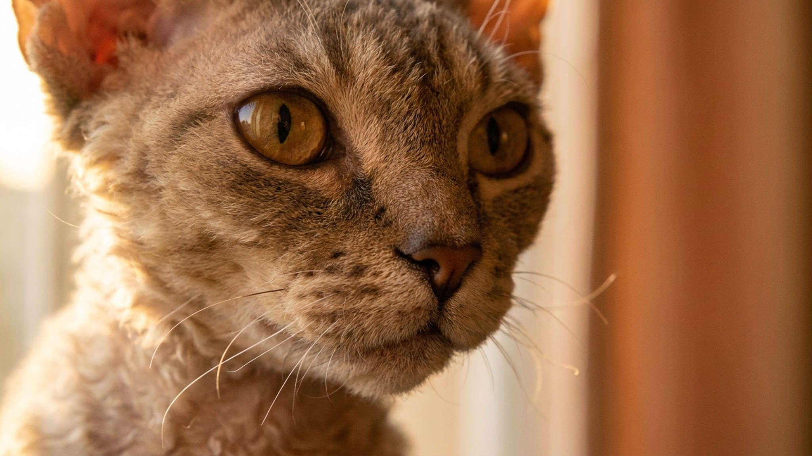

Девон-рекс залезает под одеяло, пристраивается на шее и греется о ладони хозяина — это не избалованность, а физиология. Тонкая кудрявая шерсть почти не держит тепло, и кошка компенсирует это человеческим контактом. Но за той же деликатной шерстью прячется нюанс: кожа девон-рекса работает иначе, чем у большинства пород, и стандартный уход ей не подходит. Разбираем, что делать и чего точно не стоит.
🐾 Спросите AI-ветеринара прямо сейчас
AnimaLife — приложение, где AI-ветеринар отвечает на вопросы о кошке или собаке 24/7. Бесплатно, без записи и очередей.
У девон-рекса почти нет остевого волоса и очень мало подшёрстка — только нежный волнистый покров. Такая шерсть практически не удерживает тепло. Поэтому кошка постоянно ищет источник тепла: прижимается к батарее, зарывается в пледы, выбирает хозяина как живую грелку. Это норма для породы, а не тревожный сигнал.
Что помогает: тёплые лежанки с бортами, расположенные подальше от сквозняков; температура в квартире выше 20 °C. Некоторые владельцы одевают девон-рексов в тонкие трикотажные костюмчики — кошка к этому привыкает нормально, если приучать с молодого возраста. Главное — не перегревать: нагревательные коврики без регулятора температуры опасны.
Тонкая шерсть девон-рекса плохо впитывает кожный жир — себум скапливается на поверхности кожи, в складках и ушах. Это не грязь и не болезнь: просто особенность породы, с которой нужно работать регулярно.
Купать девон-рекса часто не нужно — раз в 4–6 недель достаточно, если кожа не явно жирная. Используйте мягкий шампунь для короткошёрстных кошек с нейтральным pH. Вода не слишком горячая — кошке комфортно то, что приятно вашей руке.
Главное «не делать» — расчёсывать жёсткой щёткой или фурминатором. Шерсть девон-рекса деликатная: жёсткие зубья вырывают завитки и оставляют залысины. Достаточно резиновой рукавицы или мягкой силиконовой щётки — лёгкие движения, без давления. После купания промокните полотенцем и дайте обсохнуть в тёплом месте без сквозняков.
🐾 Дневник здоровья питомца — в кармане
Вес, прививки, симптомы и напоминания в одном приложении. AnimaLife следит за здоровьем питомца вместо вас.
🐾 Понравился разбор?
Подпишитесь на канал — каждый день разбираем по одному тревожному симптому у кошек и собак: что в пределах нормы, а когда пора к врачу. Подпишитесь, чтобы не пропустить разбор, который может спасти здоровье вашего питомца.
Материал носит информационный характер и не заменяет очную консультацию ветеринара.